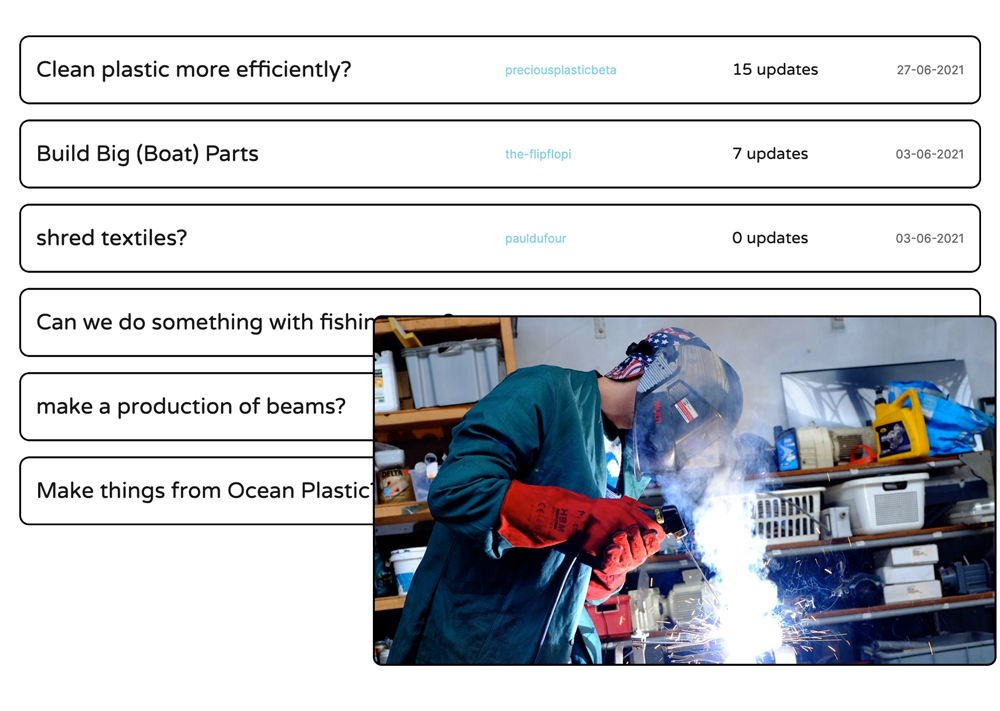

Specially designed to work on global problems
Our community platform helps people to grow communities and make it easier to collaborate on environmental projects in one single place.
A place where people can meet, help each other, ask and answer questions, share their innovative ways of fixing problems, discover people around them, connect locally, find events and more.
Communities come in many shapes and forms, we are focussing specifically on those trying to tackle global problems. Bring people together around a problem and start collaborating.
Essential tools to glue a community together
This is used for all the countless experiments and prototypes that still need to be done to find solutions for complex problems. Documenting all the good and bad things online helps other members to not make the same mistakes and accelerate the development.

Used to bring people together and meet in bigger groups. (Less good in times of COVID). Used for hosting presentations, meet ups and brainstorming sessions. It allows people outside the community to join in.
ExampleThis is the core of the community. The main source of knowledge where the rest is build around. It's like the foundation of the community, information that can be built around. Shared in video/images or text.
Community generated content that shows others how to do something. Basically how to copy something that works. It's the final result after the process of testing and prototyping. Shared step by step so you can do it yourself.
Maps are used to bring people together in the real world. Map out like minded people around you and meetup up. A powerful way to start collaborations and build a local network.